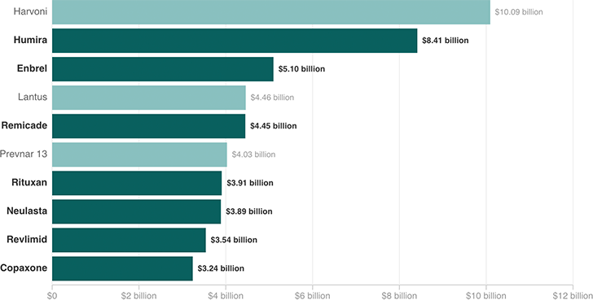

Top 10 Best-Selling Drugs
Seven of the 10 best-selling drugs in the country in 2015 were orphan drugs. Some of these drugs are not “true” orphans, critics say, because they were first approved for the mass market and later won approval for a rare disease.
